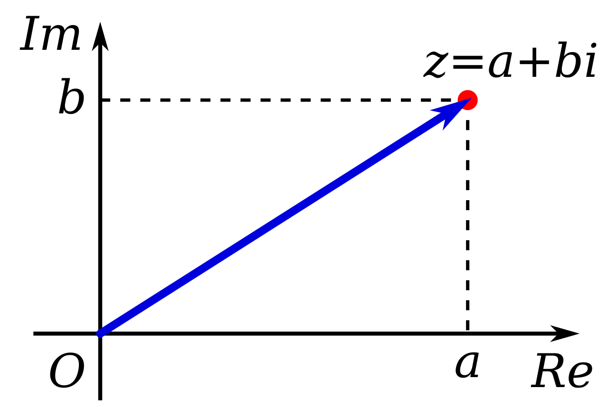

Complex number
In mathematics, a complex number is an element of a number system that extends the real numbers with a specific element denoted i, called the imaginary unit and satisfying the equation i^2 = −1 every complex number can be expressed in the form a + bi, where a and b are real numbers. Because no real number satisfies the above equation, i was called an imaginary number by René Descartes. For the complex number a+bi, a is called the real part, and b is called the imaginary part. The set of complex numbers is denoted by either of the symbols or C. Despite the historical nomenclature "imaginary", complex numbers are regarded in the mathematical sciences as just as "real" as the real numbers and are fundamental in many aspects of the scientific description of the natural world.
Complex numbers allow solutions to all polynomial equations, even those that have no solutions in real numbers. More precisely, the fundamental theorem of algebra asserts that every non-constant polynomial equation with real or complex coefficients has a solution which is a complex number. For example, the equation (x+1)^2=-9 has no real solution, since the square of a real number cannot be negative, but has the two nonreal complex solutions − 1+3i and -1-3i.